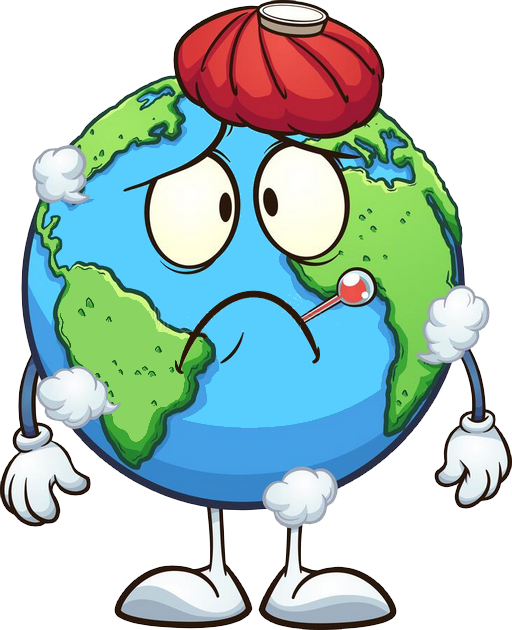

CHEGAMOS AO FINAL DA PESQUISA
SEU RESULTADO FOI:
{{valorPegada}}
Em quantitativo, se todos vivessem como você, precisaria-mos de {{valor}} planetas terra.

Este teste foi elaborado pela Redefining Progress, uma entidade conservacionista não-governamental (www.myfooprint.org).
Ele calcula a sua "Pegada Ecológica", ou seja, a área de terra necessária para atender as suas necessidades, fazendo uma estimativa ou quantidade de recursos necessarios para produzir os bens e serviços que você consome e absorver
os residuos que você produz.